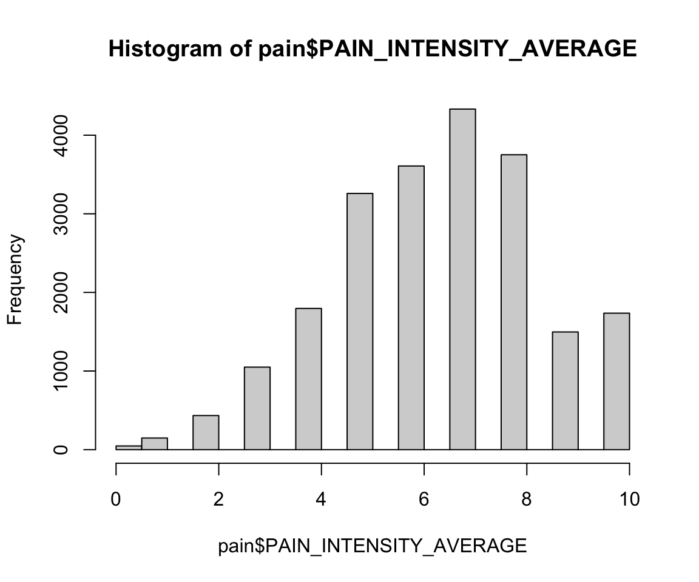
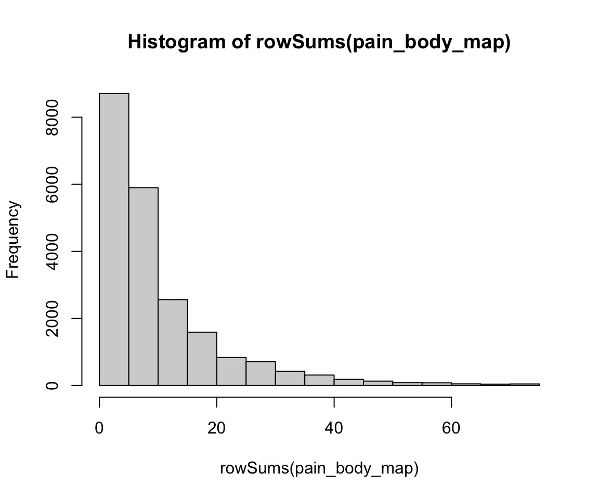
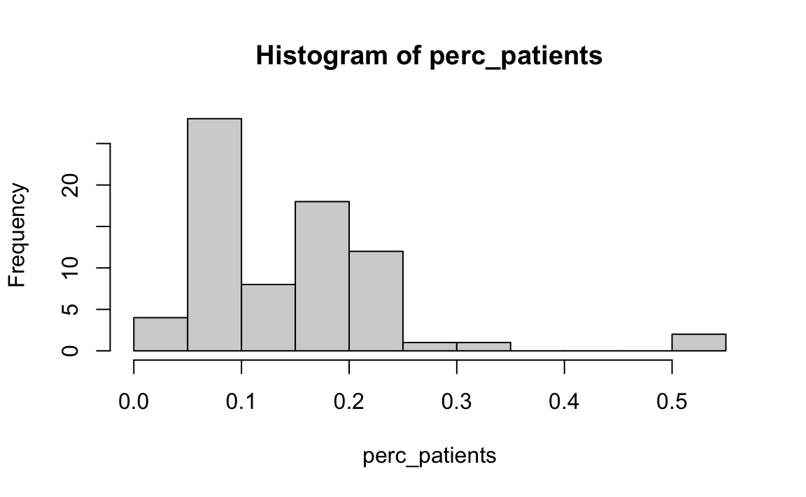
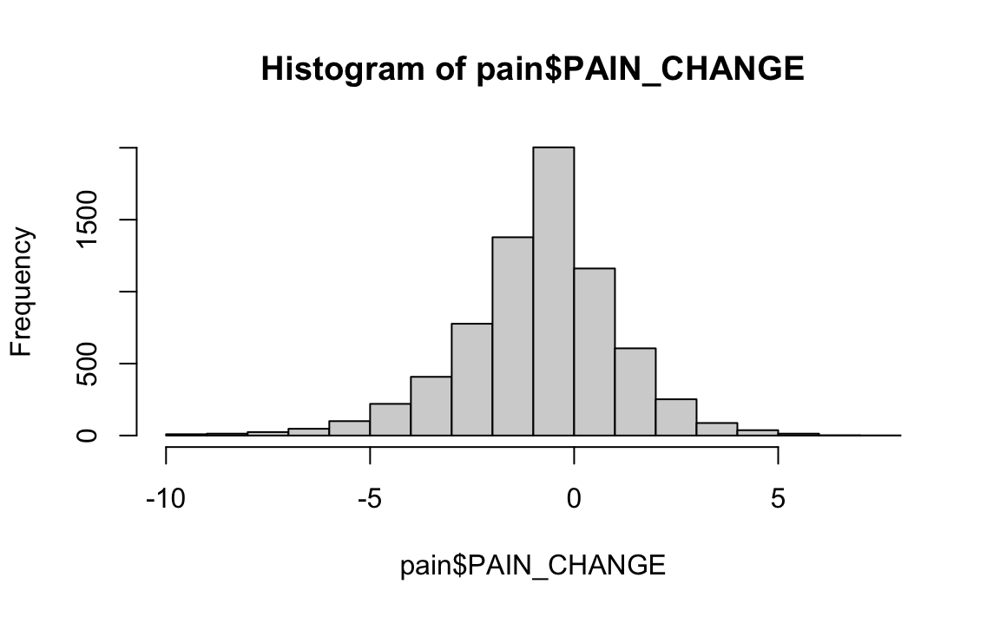

suppressPackageStartupMessages(library(HDSinRdata))3 Working with Data Files in R
In this chapter, we will be working with data in R. To start, we need to load our data into R: this requires identifying the type of data file we have (e.g. .csv, .xlsx, .dta) and finding the appropriate function to load in the data. This will create a data frame object containing the information from the file. After demonstrating how to load in such data, this chapter will show you how to find information about data columns, including finding missing values, summarizing columns, and subsetting the data. Additionally, we look at how to create new columns through some simple transformations.
In this chapter and all future chapters, we will load in the required libraries at the start of the chapter - for example, in this particular chapter, we need a single library HDSinRdata that contains the sample data sets used in this book.
3.1 Importing and Exporting Data
The data we will use in this chapter contains information about patients who visited one of the University of Pittsburgh’s seven pain management clinics. This includes patient-reported pain assessments using the Collaborative Health Outcomes Information Registry (CHOIR) at baseline and at a 3-month follow-up. You can use the help operator ?pain to learn more about the source of this data and to read its column descriptions. Since this data is available in our R package, we can use the data function to load this data into our environment. Note that this data has 21,659 rows and 92 columns.
data(pain)
dim(pain)
#> [1] 21659 92In general, the data you will be using will not be available in R packages and will instead exist in one or more data files on your personal computer. In order to load in this data to R, you need to use the function that corresponds to the file type you have. For example, you can load a .csv file using the read.csv() function in base R or using the read_csv() function from the readr package, both of which were shown in Chapter 1. As an example, we load the fake_names.csv dataset below using both of these functions: looking at the print output below, we can see that there is slight difference in the data structure and data types storing the data between these two functions. The function read.csv() loads the data as a data frame, whereas the function read_csv() loads the data as a spec_tbl_df, a special type of data frame called a tibble that is used by the tidyverse packages. We will cover this data structure in more detail in Chapter 5. For now, note that you can use either function to read in a .csv file.
read.csv("data/fake_names.csv")
#> Name Age DOB City State
#> 1 Ken Irwin 37 6/28/85 Providence RI
#> 2 Delores Whittington 56 4/28/67 Smithfield RI
#> 3 Daniel Hughes 41 5/22/82 Providence RI
#> 4 Carlos Fain 83 2/2/40 Warren RI
#> 5 James Alford 67 2/23/56 East Providence RI
#> 6 Ruth Alvarez 34 9/22/88 Providence RIreadr::read_csv("data/fake_names.csv", show_col_types=FALSE)
#> # A tibble: 6 × 5
#> Name Age DOB City State
#> <chr> <dbl> <chr> <chr> <chr>
#> 1 Ken Irwin 37 6/28/85 Providence RI
#> 2 Delores Whittington 56 4/28/67 Smithfield RI
#> 3 Daniel Hughes 41 5/22/82 Providence RI
#> 4 Carlos Fain 83 2/2/40 Warren RI
#> 5 James Alford 67 2/23/56 East Providence RI
#> # ℹ 1 more rowIn addition to loading data into R, you may also want to save data from R into a data file you can access later or share with others. To write a data frame from R to a .csv file, you can use the write.csv() function. This function has three key arguments: the first argument is the data frame in R that you want to write to a file, the second argument is the file name or the full file path where you want to write the data, and the third argument is whether or not you want to include the row names as an extra column. In this case, we will not include row names. If you do not specify a file path, R will save the file in our current working directory.
df <- data.frame(x=c(1,0,1), y=c("A", "B", "C"))
write.csv(df, "data/test.csv", row.names=FALSE)If your data is not in a .csv file, you may need to use another package to read in the file. The two most common packages are the readxl package, which makes it easy to read in Excel files, and the haven package, which can import SAS, SPSS, and Stata files. For each function, you need to specify the file path to the data file.
Excel Files: You can read in a .xls or .xlsx file using
readxl::read_excel(), which allows you to specify a sheet and/or cell range within a file. (e.g.read_excel('test.xlsx', sheet="Sheet1"))SAS:
haven::read_sas()reads in .sas7bdat or .sas7bcat files,haven::read_xpt()reads in SAS transport filesStata:
haven::read_dta()reads in .dta filesSPSS:
haven::read_spss()reads in .spss files
3.2 Summarizing and Creating Data Columns
We will now look at the data we have loaded into the data frame called pain. We use the head() function to print the first six rows. However, note that we have so many columns that all not of the columns are displayed! For those that are displayed, we can see the data type for each column under the column name. For example, we can see that the column PATIENT_NUM is a numeric column of type dbl. Because patients identification numbers are technically nominal in nature, we might consider whether we should make convert this column to a factor or a character representation later on. We can use the names() function to print all the column names. Note that columns X101 to X238 correspond to numbers on a body pain map (see the data documentation for the image of this map). Each of these columns has a 1 if the patient indicated that they have pain in that corresponding body part and a 0 otherwise.
head(pain)
#> # A tibble: 6 × 92
#> PATIENT_NUM X101 X102 X103 X104 X105 X106 X107 X108 X109
#> <dbl> <dbl> <dbl> <dbl> <dbl> <dbl> <dbl> <dbl> <dbl> <dbl>
#> 1 13118 0 0 0 0 0 0 0 0 0
#> 2 21384 0 0 0 0 0 0 0 0 0
#> 3 6240 0 0 0 0 0 0 0 0 0
#> 4 1827 0 0 0 0 0 0 0 0 0
#> 5 11309 0 0 0 0 0 0 0 0 0
#> # ℹ 1 more row
#> # ℹ 82 more variables: X110 <dbl>, X111 <dbl>, X112 <dbl>, X113 <dbl>,
#> # X114 <dbl>, X115 <dbl>, X116 <dbl>, X117 <dbl>, X118 <dbl>,
#> # X119 <dbl>, X120 <dbl>, X121 <dbl>, X122 <dbl>, X123 <dbl>,
#> # X124 <dbl>, X125 <dbl>, X126 <dbl>, X127 <dbl>, X128 <dbl>,
#> # X129 <dbl>, X130 <dbl>, X131 <dbl>, X132 <dbl>, X133 <dbl>,
#> # X134 <dbl>, X135 <dbl>, X136 <dbl>, X201 <dbl>, X202 <dbl>, …
names(pain)
#> [1] "PATIENT_NUM"
#> [2] "X101"
#> [3] "X102"
#> [4] "X103"
#> [5] "X104"
#> [6] "X105"
#> [7] "X106"
#> [8] "X107"
#> [9] "X108"
#> [10] "X109"
#> [11] "X110"
#> [12] "X111"
#> [13] "X112"
#> [14] "X113"
#> [15] "X114"
#> [16] "X115"
#> [17] "X116"
#> [18] "X117"
#> [19] "X118"
#> [20] "X119"
#> [21] "X120"
#> [22] "X121"
#> [23] "X122"
#> [24] "X123"
#> [25] "X124"
#> [26] "X125"
#> [27] "X126"
#> [28] "X127"
#> [29] "X128"
#> [30] "X129"
#> [31] "X130"
#> [32] "X131"
#> [33] "X132"
#> [34] "X133"
#> [35] "X134"
#> [36] "X135"
#> [37] "X136"
#> [38] "X201"
#> [39] "X202"
#> [40] "X203"
#> [41] "X204"
#> [42] "X205"
#> [43] "X206"
#> [44] "X207"
#> [45] "X208"
#> [46] "X209"
#> [47] "X210"
#> [48] "X211"
#> [49] "X212"
#> [50] "X213"
#> [51] "X214"
#> [52] "X215"
#> [53] "X216"
#> [54] "X217"
#> [55] "X218"
#> [56] "X219"
#> [57] "X220"
#> [58] "X221"
#> [59] "X222"
#> [60] "X223"
#> [61] "X224"
#> [62] "X225"
#> [63] "X226"
#> [64] "X227"
#> [65] "X228"
#> [66] "X229"
#> [67] "X230"
#> [68] "X231"
#> [69] "X232"
#> [70] "X233"
#> [71] "X234"
#> [72] "X235"
#> [73] "X236"
#> [74] "X237"
#> [75] "X238"
#> [76] "PAIN_INTENSITY_AVERAGE"
#> [77] "PROMIS_PHYSICAL_FUNCTION"
#> [78] "PROMIS_PAIN_BEHAVIOR"
#> [79] "PROMIS_DEPRESSION"
#> [80] "PROMIS_ANXIETY"
#> [81] "PROMIS_SLEEP_DISTURB_V1_0"
#> [82] "PROMIS_PAIN_INTERFERENCE"
#> [83] "GH_MENTAL_SCORE"
#> [84] "GH_PHYSICAL_SCORE"
#> [85] "AGE_AT_CONTACT"
#> [86] "BMI"
#> [87] "CCI_TOTAL_SCORE"
#> [88] "PAIN_INTENSITY_AVERAGE.FOLLOW_UP"
#> [89] "PAT_SEX"
#> [90] "PAT_RACE"
#> [91] "CCI_BIN"
#> [92] "MEDICAID_BIN"Recall that the $ operator can be used to access a single column. Alternatively, we can use double brackets [[]] to select a column. Below, we demonstrate both ways to print the first five values in the column with the patient’s average pain intensity.
pain$PAIN_INTENSITY_AVERAGE[1:5]
#> [1] 7 5 4 7 8
pain[["PAIN_INTENSITY_AVERAGE"]][1:5]
#> [1] 7 5 4 7 83.2.1 Column Summaries
To explore the range and distribution of a column’s values, we can use some of the base R functions. For example, the summary() function is a useful way to summarize a numeric column’s values. Below, we can see that the pain intensity values range from 0 to 10 with a median value of 7 and that there is 1 NA value.
summary(pain$PAIN_INTENSITY_AVERAGE)
#> Min. 1st Qu. Median Mean 3rd Qu. Max. NA's
#> 0.00 5.00 7.00 6.49 8.00 10.00 1We have already seen the max(), min(), mean(), and median() functions that could have computed some of these values for us separately. Since we do have an NA value, we add the na.rm=TRUE argument to these functions. Without this argument, the returned value for all of the functions will be NA.
min(pain$PAIN_INTENSITY_AVERAGE, na.rm=TRUE)
#> [1] 0
max(pain$PAIN_INTENSITY_AVERAGE, na.rm=TRUE)
#> [1] 10
mean(pain$PAIN_INTENSITY_AVERAGE, na.rm=TRUE)
#> [1] 6.49
median(pain$PAIN_INTENSITY_AVERAGE, na.rm=TRUE)
#> [1] 7Additionally, the functions below are helpful for summarizing quantitative columns.
range()- returns the minimum and maximum values for a numeric vector xquantile()- returns the sample quantiles for a numeric vectorIQR()- returns the interquartile range for a numeric vector
By default, the quantile() function returns the sample quantiles.
quantile(pain$PAIN_INTENSITY_AVERAGE, na.rm = TRUE)
#> 0% 25% 50% 75% 100%
#> 0 5 7 8 10However, we can pass in a list of probabilities to use instead. For example, below we find the 0.1 and 0.9 quantiles. Again, we add the na.rm=TRUE argument.
quantile(pain$PAIN_INTENSITY_AVERAGE, probs = c(0.1, 0.9), na.rm=TRUE)
#> 10% 90%
#> 4 9We can also plot a histogram of the sample distribution using the hist() function. We will look more in depth at how to change aspects of this histogram in Chapter 4.
hist(pain$PAIN_INTENSITY_AVERAGE)
3.2.2 Practice Question
Summarize the PROMIS_SLEEP_DISTURB_V1_0 column both numerically and visually. Your results should look like this:

# Insert your solution here:We can also use the summary() function for categorical variables. In this case, R will find the counts for each level.
summary(pain$PAT_SEX)
#> Length Class Mode
#> 21659 character characterFor categorical columns, it is also useful to use the table() function, which returns the counts for each possible value, instead of the summary() function. By default, table() ignores NA values. However, we can set useNA="always" if we also want to display the number of NA values in the table output. Additionally, we can use the prop.table() function to convert the counts to proportions. Below, we can see that the column PAT_SEX column, which corresponds to the reported patient sex, has a single missing value, and we can also see that around 60% of patients are female.
table(pain$PAT_SEX, useNA="always")
#>
#> female male <NA>
#> 13102 8556 1prop.table(table(pain$PAT_SEX))
#>
#> female male
#> 0.605 0.395Note that this column is not actually a factor column yet, which we can check using the is.factor() function. We can convert it to one using as.factor().
is.factor(pain$PAT_SEX)
#> [1] FALSEpain$PAT_SEX <- as.factor(pain$PAT_SEX)
is.factor(pain$PAT_SEX)
#> [1] TRUE3.2.3 Other Summary Functions
Sometimes we want to summarize information across multiple columns or rows. We can use the rowSums() and colSums() functions to sum over the rows or columns of a matrix or data frame. We first subset the data to the body pain map regions. In the first line of code, I select the column names pertaining to these columns. This allows me to select those columns in the second line of code and store this subset of the data as a new data frame called pain_body_map.
body_map_cols <- names(pain)[2:75]
pain_body_map <- pain[, body_map_cols]
head(pain_body_map)
#> # A tibble: 6 × 74
#> X101 X102 X103 X104 X105 X106 X107 X108 X109 X110 X111
#> <dbl> <dbl> <dbl> <dbl> <dbl> <dbl> <dbl> <dbl> <dbl> <dbl> <dbl>
#> 1 0 0 0 0 0 0 0 0 0 0 0
#> 2 0 0 0 0 0 0 0 0 0 0 0
#> 3 0 0 0 0 0 0 0 0 0 0 0
#> 4 0 0 0 0 0 0 0 0 0 0 0
#> 5 0 0 0 0 0 0 0 0 0 0 0
#> # ℹ 1 more row
#> # ℹ 63 more variables: X112 <dbl>, X113 <dbl>, X114 <dbl>, X115 <dbl>,
#> # X116 <dbl>, X117 <dbl>, X118 <dbl>, X119 <dbl>, X120 <dbl>,
#> # X121 <dbl>, X122 <dbl>, X123 <dbl>, X124 <dbl>, X125 <dbl>,
#> # X126 <dbl>, X127 <dbl>, X128 <dbl>, X129 <dbl>, X130 <dbl>,
#> # X131 <dbl>, X132 <dbl>, X133 <dbl>, X134 <dbl>, X135 <dbl>,
#> # X136 <dbl>, X201 <dbl>, X202 <dbl>, X203 <dbl>, X204 <dbl>, …I now compute the row sums and column sums on this subset of data. The row sum for each patient is the total number of body parts in which they experience pain, whereas the column sum for each pain region is the total number of patients who experience pain in that area. The histogram below shows that most people select a low number of total regions.
hist(rowSums(pain_body_map))
We can also see that some body parts are more often selected than others. We create a vector called perc_patients below by finding the number of patients who selected each region divided by the total number of patients. The histogram shows that some body regions are selected by over 50% of patients!
perc_patients <- colSums(pain_body_map, na.rm=TRUE)/nrow(pain_body_map)
hist(perc_patients)
We use the which.max() function to see that the 55th region X219 is selected the most number of times. This corresponds to lower back pain.
which.max(perc_patients)
#> X219
#> 55Another pair of useful functions are pmin() and pmax(). These functions take at least two vectors and find the pairwise minimum of maximum across those vectors, as shown below. For example, suppose you had two vectors,
v1 = c(5, 9, 12)
v2 = c(2, 18, 4)
pmax(v1, v2)
#> [1] 5 18 12Looking back at the pain data, if we want to create a new column lower_back_pain that corresponds to whether someone selects either X218 or X219 we can use the pmax() function to find the maximum value between columns X218 and X219. We can see that almost 60% of patients select at least one of these regions.
lower_back <- pmax(pain_body_map$X218, pain_body_map$X219)
prop.table(table(lower_back))
#> lower_back
#> 0 1
#> 0.405 0.595We might want to store the total number of pain regions and our indicator of whether or not a patient has lower back pain as new columns. We use our code above to create new columns in the pain data using the $ operator. To be consistent with the column naming in the data, we use all upper case for our column names. The dim() function shows that our data has grown by two columns, as expected.
pain$NUM_REGIONS <- rowSums(pain_body_map)
pain$LOWER_BACK <- lower_back
dim(pain)
#> [1] 21659 94Another useful function that allows us to perform computations over the rows or columns of a matrix or data frame is the apply(X, MARGIN, FUN) function, which takes in three arguments. The first argument is a data frame or matrix X, the second argument MARGIN indicates whether to compute over the rows (1) or columns (2), and the last argument is the function FUN to apply across that margin. The first example below finds the maximum value for each row in the data frame pain_body_map. Taking the minimum value of the row maximum values shows that every patient selected at least one body map region. In the second example, we find the sum of the body pain regions over the columns, which is equivalent to the example using colSums() above. In this case, we added the na.rm=TRUE argument. The apply() function will pass additional arguments to the function FUN.
any_selected <- apply(pain_body_map, 1, max)
min(any_selected, na.rm=TRUE)
#> [1] 1perc_patients <- apply(pain_body_map, 2, sum, na.rm=TRUE)/nrow(pain_body_map)
summary(perc_patients)
#> Min. 1st Qu. Median Mean 3rd Qu. Max.
#> 0.032 0.070 0.136 0.144 0.181 0.5423.2.4 Practice Question
Find the sum of each of the PROMIS measures across all patients using apply() and then using colSums(). Verify that these two methods return the same result, which is given below:

# Insert your solution here:3.2.5 Missing, Infinite, and NaN Values
As we saw above, this data contains some missing values, which are represented as NA in R. R treats these values as if they were unknown, which is why we have to add the na.rm=TRUE argument to functions like sum() and max(). In the example below, we can see that R figures out that 1 plus an unknown number is also unknown!
NA+1
#> [1] NAWe can determine whether a value is missing using the function is.na(). This function returns TRUE if the value is NA and FALSE otherwise. We can then sum up these values for a single column, since each TRUE value corresponds to a value of 1 and each FALSE corresponds to a value of 0. Below we can see that there is a single NA value for the column PATIENT_NUM, which is the patient ID number.
sum(is.na(pain$PATIENT_NUM))
#> [1] 1If we want to calculate the sum of NA values for each column instead of just a single column, we can use the apply function. Since we want to apply this computation over the columns, the second argument has value 2. Recall that the last argument is the function we want to call for each column. In this case, we want to apply the combination of the sum() and is.na() function. To do so, we have to specify this function ourselves. This is called an anonymous function since it doesn’t have a name.
num_missing_col <- apply(pain, 2, function(x) sum(is.na(x)))
min(num_missing_col)
#> [1] 1Interestingly, we can see that there is at least one missing value in each column. It might be the case that there is a row with all NA values. Let’s apply the same function by row. Taking the maximum, we can see that row 11749 has all NA values.
num_missing_row <- apply(pain, 1, function(x) sum(is.na(x)))
max(num_missing_row)
#> [1] 94
which.max(num_missing_row)
#> [1] 11749We remove that row and then find the percentage of missing values by column. We can see that the column with the highest percentage of missing values is the pain intensity at follow-up. In fact, only 33% of patients have a recorded follow-up visit.
pain <- pain[-11749,]
num_missing_col <- apply(pain, 2, function(x) sum(is.na(x))/nrow(pain))
num_missing_col
#> PATIENT_NUM X101
#> 0.00000 0.00000
#> X102 X103
#> 0.00000 0.00000
#> X104 X105
#> 0.00000 0.00000
#> X106 X107
#> 0.00000 0.00000
#> X108 X109
#> 0.00000 0.00000
#> X110 X111
#> 0.00000 0.00000
#> X112 X113
#> 0.00000 0.00000
#> X114 X115
#> 0.00000 0.00000
#> X116 X117
#> 0.00000 0.00000
#> X118 X119
#> 0.00000 0.00000
#> X120 X121
#> 0.00000 0.00000
#> X122 X123
#> 0.00000 0.00000
#> X124 X125
#> 0.00000 0.00000
#> X126 X127
#> 0.00000 0.00000
#> X128 X129
#> 0.00000 0.00000
#> X130 X131
#> 0.00000 0.00000
#> X132 X133
#> 0.00000 0.00000
#> X134 X135
#> 0.00000 0.00000
#> X136 X201
#> 0.00000 0.00000
#> X202 X203
#> 0.00000 0.00000
#> X204 X205
#> 0.00000 0.00000
#> X206 X207
#> 0.00000 0.00000
#> X208 X209
#> 0.00000 0.00000
#> X210 X211
#> 0.00000 0.00000
#> X212 X213
#> 0.00000 0.00000
#> X214 X215
#> 0.00000 0.00000
#> X216 X217
#> 0.00000 0.00000
#> X218 X219
#> 0.00000 0.00000
#> X220 X221
#> 0.00000 0.00000
#> X222 X223
#> 0.00000 0.00000
#> X224 X225
#> 0.00000 0.00000
#> X226 X227
#> 0.00000 0.00000
#> X228 X229
#> 0.00000 0.00000
#> X230 X231
#> 0.00000 0.00000
#> X232 X233
#> 0.00000 0.00000
#> X234 X235
#> 0.00000 0.00000
#> X236 X237
#> 0.00000 0.00000
#> X238 PAIN_INTENSITY_AVERAGE
#> 0.00000 0.00000
#> PROMIS_PHYSICAL_FUNCTION PROMIS_PAIN_BEHAVIOR
#> 0.00000 0.29412
#> PROMIS_DEPRESSION PROMIS_ANXIETY
#> 0.00402 0.00402
#> PROMIS_SLEEP_DISTURB_V1_0 PROMIS_PAIN_INTERFERENCE
#> 0.00402 0.00697
#> GH_MENTAL_SCORE GH_PHYSICAL_SCORE
#> 0.13602 0.13602
#> AGE_AT_CONTACT BMI
#> 0.00000 0.26004
#> CCI_TOTAL_SCORE PAIN_INTENSITY_AVERAGE.FOLLOW_UP
#> 0.00000 0.67042
#> PAT_SEX PAT_RACE
#> 0.00000 0.00651
#> CCI_BIN MEDICAID_BIN
#> 0.00000 0.01385
#> NUM_REGIONS LOWER_BACK
#> 0.00000 0.00000We will create two new columns: first, we create a column for the change in pain at follow-up, and second, we create a column which is the percent change in pain at follow-up.
pain$PAIN_CHANGE <- pain$PAIN_INTENSITY_AVERAGE.FOLLOW_UP - pain$PAIN_INTENSITY_AVERAGE
hist(pain$PAIN_CHANGE)
pain$PERC_PAIN_CHANGE <- pain$PAIN_CHANGE/pain$PAIN_INTENSITY_AVERAGE
summary(pain$PERC_PAIN_CHANGE)
#> Min. 1st Qu. Median Mean 3rd Qu. Max. NA's
#> -1 0 0 Inf 0 Inf 14520In the summary of the percent change, we can see that the maximum value is Inf. This is R’s representation of infinity. This occurred because some patients have an initial pain score of 0, which creates infinite values when we divide through by this value to find the percent change. We can test whether something is infinite using the is.infinite() or is.finite() functions. This shows that there were three patients with infinite values. The value -Inf is used to represent negative infinity.
sum(is.infinite(pain$PERC_PAIN_CHANGE))
#> [1] 3Another special value in R is NaN, which stands for “Not a Number”. For example, 0/0 will result in a NaN value. We can test for NaN values using the is.nan() function.
0/0
#> [1] NaNLooking back at the missing values, there are two useful functions for selecting the complete cases in a data frame. The na.omit() function returns the data frame with incomplete cases removed, whereas complete.cases() returns TRUE/FALSE values for each row indicating whether each row is complete, which we can then use to select the rows with TRUE values. Below, we see both approaches select the same number of rows.
pain_sub1 <- na.omit(pain)
pain_sub2 <- pain[complete.cases(pain),]
dim(pain_sub1)
#> [1] 2413 96
dim(pain_sub2)
#> [1] 2413 963.3 Using Logic to Subset, Summarize, and Transform
Above, we used TRUE/FALSE values to select rows in a data frame. The logic operators in R allow us to expand on this capability to write more complex logic. The operators are given below.
<less than<=less than or equal to>greater than>=greater than or equal to==equal to!=not equal toa %in% ba’s value is in a vector of values b
The first six operators are a direct comparison between two values and are demonstrated below.
2 < 2
#> [1] FALSE
2 <= 2
#> [1] TRUE
3 > 2
#> [1] TRUE
3 >= 2
#> [1] TRUE
"A" == "B"
#> [1] FALSE
"A" != "B"
#> [1] TRUEThe operators assume there is a natural ordering or comparison between values. For example, for strings the ordering is alphabetical and for logical operators we use their numeric interpretation (TRUE = 1, FALSE = 0).
"A" < "B"
#> [1] TRUE
TRUE < FALSE
#> [1] FALSEThe %in% operator is slightly different. This operator checks whether a value is in a set of possible values. Below, we can check whether values are in the set c(4,1,2).
1 %in% c(4,1,2)
#> [1] TRUE
c(0,1,5) %in% c(4,1,2)
#> [1] FALSE TRUE FALSEAdditionally, we can use the following operators, which allow us to negate or combine logical operators.
!x- the NOT operator!reverses TRUE/FALSE valuesx | y- the OR operator|checks whether either x or y is equal to TRUEx & y- the AND operator&checks whether both x and y are equal to TRUExor(x,y)- the xor function checks whether exactly one of x or y is equal to TRUE (called exclusive or)any(x)- the any function checks whether any value in x is TRUE (equivalent to using an OR operator|between all values)all(x)- the all function checks whether all values in x are TRUE (equivalent to using an AND operator&between all values)
Some simple examples for each are given below.
!(2 < 3)
#> [1] FALSE
("Alice" < "Bob") | ("Alice" < "Aaron")
#> [1] TRUE
("Alice" < "Bob") & ("Alice" < "Aaron")
#> [1] FALSE
xor(TRUE, FALSE)
#> [1] TRUE
any(c(FALSE, TRUE, TRUE))
#> [1] TRUE
all(c(FALSE, TRUE, TRUE))
#> [1] FALSELet’s demonstrate these operators on the pain data. We first update the Medicaid column by making the character values more informative. The logic on the left hand side selects those that do or do not have Medicaid and then assigns those values to the new ones.
pain$MEDICAID_BIN[pain$MEDICAID_BIN == "no"] <- "No Medicaid"
pain$MEDICAID_BIN[pain$MEDICAID_BIN == "yes"] <- "Medicaid"
table(pain$MEDICAID_BIN)
#>
#> Medicaid No Medicaid
#> 4601 16757Additionally, we could subset the data to only those who have follow-up. The not operator ! will reverse the TRUE/FALSE values returned from the is.na() function. Therefore, the new value will be TRUE if the follow-up value is not NA.
pain_follow_up <- pain[!is.na(pain$PAIN_INTENSITY_AVERAGE.FOLLOW_UP),]Earlier, we created a column indicating whether or not a patient has lower back pain. We now use the any() function to check whether a patient has general back pain. If at least one of these values is equal to 1, then the function will return TRUE. If we had used the all() function instead, this would check whether all values are equal to 1, indicating that a patient has pain on their whole back.
pain$BACK <- any(pain$X208==1, pain$X209==1, pain$X212==1, pain$X213==1,
pain$X218==1, pain$X219==1)3.3.1 Practice Question
Subset the pain data to those who have follow-up and have an initial average pain intensity of 5 or above. Name this subset of the data pain_subset. Print the head of this data. The first 6 patient IDs in this new dataset should be 13118, 21384, 1827, 11309, 11093, and 14667.
# Insert your solution here:Lastly, we look at the column for patient race PAT_RACE. The table() function shows that most patients are WHITE or BLACK. Given how few observations are in the other categories, we may want to combine some of these levels into one.
table(pain$PAT_RACE)
#>
#> ALASKA NATIVE AMERICAN INDIAN BLACK
#> 2 58 3229
#> CHINESE DECLINED FILIPINO
#> 21 121 6
#> GUAM/CHAMORRO HAWAIIAN INDIAN (ASIAN)
#> 1 1 49
#> JAPANESE KOREAN NOT SPECIFIED
#> 9 10 4
#> OTHER OTHER ASIAN OTHER PACIFIC ISLANDER
#> 1 47 12
#> VIETNAMESE WHITE
#> 6 17940Another way we could have found all possible values for this column is to use the unique() function. This function takes in a data frame or vector x and returns x with all duplicate rows or values removed.
unique(pain$PAT_RACE)
#> [1] "WHITE" "BLACK"
#> [3] "DECLINED" "AMERICAN INDIAN"
#> [5] "INDIAN (ASIAN)" "ALASKA NATIVE"
#> [7] NA "FILIPINO"
#> [9] "JAPANESE" "VIETNAMESE"
#> [11] "KOREAN" "CHINESE"
#> [13] "OTHER ASIAN" "NOT SPECIFIED"
#> [15] "HAWAIIAN" "OTHER PACIFIC ISLANDER"
#> [17] "OTHER" "GUAM/CHAMORRO"To combine some of these levels, we can use the %in% operator. We first create an Asian, Asian American, or Pacific Islander race category and then create an American Indian or Alaska Native category.
aapi_values <- c("CHINESE", "HAWAIIAN", "INDIAN (ASIAN)", "FILIPINO", "VIETNAMESE",
"JAPANESE", "KOREAN", "GUAM/CHAMORRO", "OTHER ASIAN",
"OTHER PACIFIC ISLANDER")
pain$PAT_RACE[pain$PAT_RACE %in% aapi_values] <- "AAPI"
pain$PAT_RACE[pain$PAT_RACE %in% c("ALASKA NATIVE", "AMERICAN INDIAN")] <- "AI/AN"
table(pain$PAT_RACE)
#>
#> AAPI AI/AN BLACK DECLINED NOT SPECIFIED
#> 162 60 3229 121 4
#> OTHER WHITE
#> 1 179403.3.2 Other Selection Functions
Above, we selected rows using TRUE/FALSE boolean values. Instead, we could have also used the which() function. This function takes TRUE/FALSE values and returns the index values for all the TRUE values. We use this to treat those with race given as DECLINED as not specified.
pain$PAT_RACE[which(pain$PAT_RACE == "DECLINED")] <- "NOT SPECIFIED"Another selection function is the subset() function. This function takes in two arguments. The first is the vector, matrix, or data frame to select from and the second is a vector of TRUE/FALSE values to use for row selection. We use this to find the observation with race marked as OTHER. We then update this race to also be marked as not specified.
subset(pain, pain$PAT_RACE == "OTHER")
#> # A tibble: 1 × 97
#> PATIENT_NUM X101 X102 X103 X104 X105 X106 X107 X108 X109
#> <dbl> <dbl> <dbl> <dbl> <dbl> <dbl> <dbl> <dbl> <dbl> <dbl>
#> 1 3588 1 1 1 0 1 1 1 0 0
#> # ℹ 87 more variables: X110 <dbl>, X111 <dbl>, X112 <dbl>, X113 <dbl>,
#> # X114 <dbl>, X115 <dbl>, X116 <dbl>, X117 <dbl>, X118 <dbl>,
#> # X119 <dbl>, X120 <dbl>, X121 <dbl>, X122 <dbl>, X123 <dbl>,
#> # X124 <dbl>, X125 <dbl>, X126 <dbl>, X127 <dbl>, X128 <dbl>,
#> # X129 <dbl>, X130 <dbl>, X131 <dbl>, X132 <dbl>, X133 <dbl>,
#> # X134 <dbl>, X135 <dbl>, X136 <dbl>, X201 <dbl>, X202 <dbl>,
#> # X203 <dbl>, X204 <dbl>, X205 <dbl>, X206 <dbl>, X207 <dbl>, …pain$PAT_RACE[pain$PATIENT_NUM==3588] <- "NOT SPECIFIED"
table(pain$PAT_RACE)
#>
#> AAPI AI/AN BLACK NOT SPECIFIED WHITE
#> 162 60 3229 126 179403.4 Recap Video
In the video below, we reference the population mean and standard deviations for the instrument variables in the data. Use the help operator (?pain) to refresh your memory about these variables.
<iframe width="700" height="500" src="https://www.youtube.com/embed/EU0UJN68OWQ" title="YouTube video player" frameborder="0" allow="accelerometer; autoplay; clipboard-write; encrypted-media; gyroscope; picture-in-picture; web-share" allowfullscreen></iframe>3.5 Exercises
For these exercises, we will again be using the pain data from the HDSinRdata package.
Print summary statistics for the
PROMIS_PHYSICAL_FUNTIONandPROMIS_ANXIETYcolumns in this dataset. Read the data documentation for these two columns, which both have range 0 to 100, and then comment on the distributions of these columns.Create frequency tables for the values of
PAT_SEXandPAT_RACEand summarize what these tables tell you about the distributions of these demographic characteristics.Create a new data frame called
pain.newthat doesn’t contain patients with NA values for bothGH_MENTAL_SCOREandGH_PHYSICAL_SCORE, which are the PROMIS global mental and physical scores, respectively.Create a vector of the proportion of patients who reported pain in each of the pain regions. Then, find the minimum, median, mean, maximum, standard deviation, and variance of this vector.
Calculate the median and interquartile range of the distribution of the total number of painful leg regions selected for each patient. Then, write a few sentences explaining anything interesting you observe about this distribution in the context of this dataset.
Look at the distribution of average pain intensity between patients with only one pain region selected vs. those with more than one region selected. What do you notice?
Create a histogram to plot the distribution of the
PAIN_INTENSITY_AVERAGE.FOLLOW_UPcolumn. Then, create a table summarizing how many patients had missing values in this column. Finally, choose two columns to compare the distribution between those with and without missing follow up. What do you notice?